Desarrollando con Azure Functions y Azure OpenAI
Teoría y práctica para la creación de aplicaciones modernas
Nombre: Luis Felipe Díaz Valbuena
Agenda
- Azure Functions: Introducción
- Azure OpenAI: ¿Qué es?
- Azure OpenAI: Beneficios
- Azure OpenAI: ¿Cómo funciona?
- El problema / Diagrama Arquitectónico
- Demostración práctica
- Mejores prácticas
- Resultados y futuro
- Conclusiones
- Preguntas sin respuestas
Azure Functions: Introducción
Ejecución de código bajo demanda en la nube, sin necesidad de administrar infraestructura.
- Escalabilidad automática
- Pago solo por el tiempo de ejecución
- Simplificación de la infraestructura, sin servidores que gestionar
Azure Functions: Tipos de funciones
Tipos de funciones que se pueden ejecutar:
- HTTP Trigger: Funciones que responden a solicitudes HTTP, ideales para crear APIs o endpoints.
- Event Grid Trigger: Funciones que se activan por eventos de Azure Event Grid, como la carga de archivos a Blob Storage.
- Queue Trigger: Funciones que se activan por mensajes en colas de Azure Storage, útil para procesar tareas en segundo plano.
- Timer Trigger: Funciones que se ejecutan en intervalos específicos, como un cron job.
- Cosmos DB Trigger: Funciones que reaccionan a cambios en una base de datos Cosmos DB.
- Webhook Trigger: Funciones que responden a eventos externos a través de un webhook.
Ejemplos: Procesamiento de datos, integración con APIs, webhooks, tareas programadas.
Azure OpenAI: ¿Qué es?
- Servicio que integra los modelos avanzados de OpenAI en la nube de Azure.
- Modelos soportados:
- GPT: Generación de texto y chatbots.
- Codex: Comprensión de código.
- DALL-E: Generación de imágenes.
Azure OpenAI: Beneficios
- Seguridad y cumplimiento empresarial.
- Escalabilidad y fiabilidad en la infraestructura de Azure.
- Integración sencilla con otros servicios de Azure.
Azure OpenAI: ¿Cómo funciona?
Pasos básicos para implementar Azure OpenAI:
- Configurar un recurso de Azure OpenAI en el portal de Azure.
- Seleccionar el modelo adecuado para tu caso de uso (GPT, Codex, DALL-E).
- Conectar tu aplicación mediante las API REST o SDK.
El problema
En miBitákora, los empleados pueden enviar una foto de su incapacidad para que se procese automáticamente. Usamos Azure Functions junto con Tesseract.js para extraer el texto de la imagen y Azure OpenAI para obtener los datos relevantes de la incapacidad.
El flujo de procesamiento incluye varias validaciones, como la autenticación del token, la validación de la imagen y la extracción de los datos. El siguiente diagrama describe este proceso.
Diagrama de Flujo
Demostración Práctica
Objetivo: Crear una función que reciba una imagen y devuelva una incapacidad por Azure OpenAI.
- Configurar el entorno
- Escribir código en Azure Functions
- Integrar con Azure OpenAI
- Probar y ejecutar
Configurar el entorno
Paso 2: Instalar las herramientas de Azure Functions en tu máquina local.
Paso 3: Crea un proyecto de Azure Functions en Visual Studio Code con este comando:
Debería verse algo así:
Pillemos el código:
Pillemos el código:
Nos toca instalar algunos paquetes:
Resultados y Futuro
Cómo las empresas pueden aprovechar esta integración
Potenciales mejoras futuras en Azure OpenAI
Conclusiones
- Resumen de la sesión
- Inspírate para explorar más integraciones
- Comienza a construir con Azure
Preguntas y Respuestas
Espacio para resolver dudas del público.